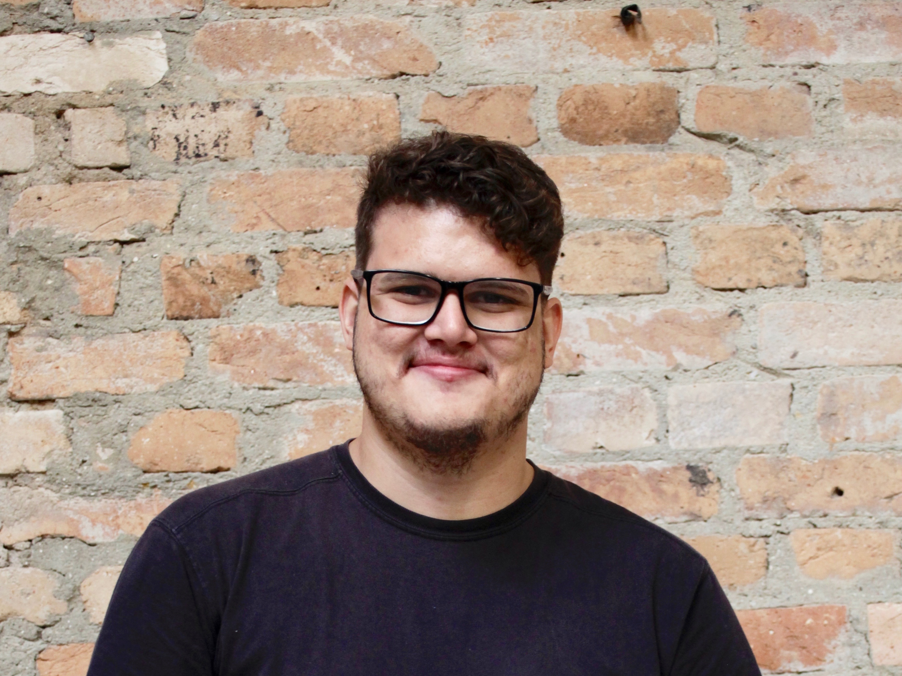

01 / produto próprio
Oficina de Roteiros
Uma experiência mais organizada e visual para escrever, estruturar e gerenciar projetos criativos.
React · Next.js · TypeScript↗
Sou Vinicius Mendes Maia. Uno design, tecnologia e desenvolvimento para transformar conceitos em experiências digitais reais.
Ver projetos ↘
Designing the useful, building the possible.
Design · Code · AIProdutos e experiências construídos do zero, da ideia à implementação.
Uma experiência mais organizada e visual para escrever, estruturar e gerenciar projetos criativos.
Estudo bíblico, leitura, devocionais e organização reunidos em uma experiência centralizada.
Uma experiência de marca para casa, cama, mesa, banho e decoração.
Presença digital e comunicação para uma comunidade em movimento.
Eu penso em sistemas, desenho experiências e construo coisas que precisam existir.
Um processo aberto, prático e guiado pelo problema.
Investigo o contexto, as pessoas e o problema antes de pensar na solução.
Organizo ideias, requisitos e direção visual para dar forma à experiência.
Desenvolvo, testo e evoluo o produto até ele funcionar no mundo real.
Para oportunidades, colaborações e projetos digitais.